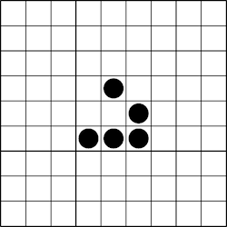
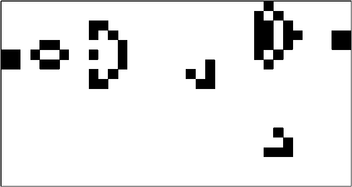
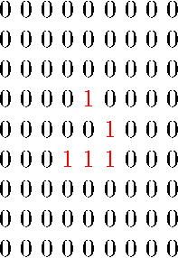
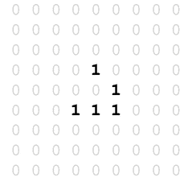
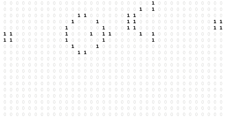

The other day I thought about that it would be nice to program Conway’s Game of Life in LaTeX and create an animated PDF output. You could say that implementing the Game of Life is pretty easy. It is. But not in LaTeX, at least not for me. After using LaTeX for years I still find it hard to understand some codes and especially writing programs in “pure LaTeX”.
Since I use PGF/TikZ fairly often I decided to use pgfmath for the implementation. Pretty soon I got stuck, I needed to assign values to array elements, and I didn’t know how to overcome this problem in LaTeX. So I decided to ask a question on TeX.SX. This is the point that things get interesting.
I asked a question with the title “Assign value to array element (PGF/TikZ)”, I also wrote that my aim was to program Conway’s Game of Life in LaTeX, and posted my initial code. Before long two answers came, and the question was renamed to “Programming Conway’s Game of Life in LaTeX”. The first answer implemented the Game of Life in LaTeX, the second implemented it in LuaTeX. I was stunned. Especially from the LaTeX implementation. I didn’t – and still don’t – understand the code. :) At the end I decided I should get acquainted with LuaTeX, and write my own solution in it:

|
1
2 3 4 5 6 7 8 9 10 11 12 13 14 15 16 17 18 19 20 21 22 23 24 25 26 27 28 29 30 31 32 33 34 35 36 37 38 39 40 41 42 43 44 45 46 47 48 49 50 51 52 53 54 55 56 57 58 59 60 61 62 63 64 65 66 67 68 69 70 71 72 73 74 75 76 77 78 79 80 81 82 83 84 85 86 87 88 89 90 91 92 93 94 95 96 97 98 99 100 101 102 103 104 105 106 107 108 109 110 111 112 113 114 115 116 117 118 119 120 121 122 123 124 125 126 127 128 129 130 131 132 133 134 135 136 137 138 139 140 141 142 143 144 145 146 147 148 149 150 151 152 153 154 155 156 157 158 159 160 |
\documentclass{article}
\usepackage[a0paper]{geometry} \usepackage{luacode} \usepackage{animate} \usepackage{tikz} \usepackage{xcolor} \usepackage[active, tightpage]{preview} \PreviewEnvironment{animateinline} %\PreviewEnvironment{tikzpicture} \tikzset{% cellframe/.style={% minimum size=5mm,% draw,% fill=white,% fill opacity=0% }% } \tikzset{% alivecell/.style={% circle,% inner sep=0pt,% minimum size=4mm,% fill=black% }% } \setlength{\PreviewBorder}{5mm} \begin{document} \begin{luacode*} iterations = 36 grid = {{0, 0, 0, 0, 0, 0, 0, 0, 0}, {0, 0, 0, 0, 0, 0, 0, 0, 0}, {0, 0, 0, 0, 0, 0, 0, 0, 0}, {0, 0, 0, 0, 1, 0, 0, 0, 0}, {0, 0, 0, 0, 0, 1, 0, 0, 0}, {0, 0, 0, 1, 1, 1, 0, 0, 0}, {0, 0, 0, 0, 0, 0, 0, 0, 0}, {0, 0, 0, 0, 0, 0, 0, 0, 0}, {0, 0, 0, 0, 0, 0, 0, 0, 0}} \end{luacode*} \begin{luacode*} function evolve(grid) local temp = {} local gridsize = #grid for i = 1, gridsize do temp[i] = {} for j = 1, gridsize do temp[i][j] = 0 end end for i = 1, gridsize do for j = 1, gridsize do iminus = i - 1 iplus = i + 1 jminus = j - 1 jplus = j + 1 if iminus == 0 then iminus = gridsize end if iplus == gridsize + 1 then iplus = 1 end if jminus == 0 then jminus = gridsize end if jplus == gridsize + 1 then jplus = 1 end neighbourcount = grid[iminus][jminus] + grid[iminus][j] + grid[iminus][jplus] + grid[i][jminus] + grid[i][jplus] + grid[iplus][jminus] + grid[iplus][j] + grid[iplus][jplus] if (grid[i][j] == 1 and (neighbourcount == 2 or neighbourcount == 3)) or (grid[i][j] == 0 and neighbourcount == 3) then temp[i][j] = 1 else temp[i][j] = 0 end end end return temp end function display(grid) local gridsize = #grid for i = 1, gridsize do for j = 1, gridsize do tex.sprint([[\node[cellframe] at (]]) tex.sprint((i - 1) * 5) tex.sprint([[mm,]]) tex.sprint(-((j - 1) * 5)) tex.sprint([[mm){0};]]) if grid[j][i] == 1 then tex.sprint([[\node[alivecell] at (]]) tex.sprint((i - 1) * 5) tex.sprint([[mm,]]) tex.sprint(-((j - 1) * 5)) tex.sprint([[mm){1};]]) end end end end function animate(grid, iterations) for i = 1, iterations - 1 do display(grid) tex.sprint([[\newframe]]) grid = evolve(grid) end display(grid) end function frames(grid, iterations) for i = 1, iterations - 1 do tex.sprint([[\begin{tikzpicture}]]) display(grid) grid = evolve(grid) tex.sprint([[\end{tikzpicture}]]) tex.sprint([[\clearpage]]) end tex.sprint([[\begin{tikzpicture}]]) display(grid) tex.sprint([[\end{tikzpicture}]]) end \end{luacode*} \noindent\begin{animateinline}[autoplay,loop, begin={\begin{tikzpicture}[scale=1]}, end={\end{tikzpicture}}]{5} \luadirect{animate(grid, iterations)} \end{animateinline} %\noindent\luadirect{frames(grid, iterations)} \end{document} |
Note: More information about my implementation is available in my answer on TeX.SX.
It turned out to be pretty easy to do this in LuaTeX, however I struggled with the modulus operator (%) and printing from Lua to TeX. Still it became a pretty nice solution, I think.
Last but not least I’m very grateful for the answers on my question. Here are some nice outputs of jfbu’s and JLDiaz’s answers (if you have a TeX.SX registration then please post an upvote on them because they are really great):

 
